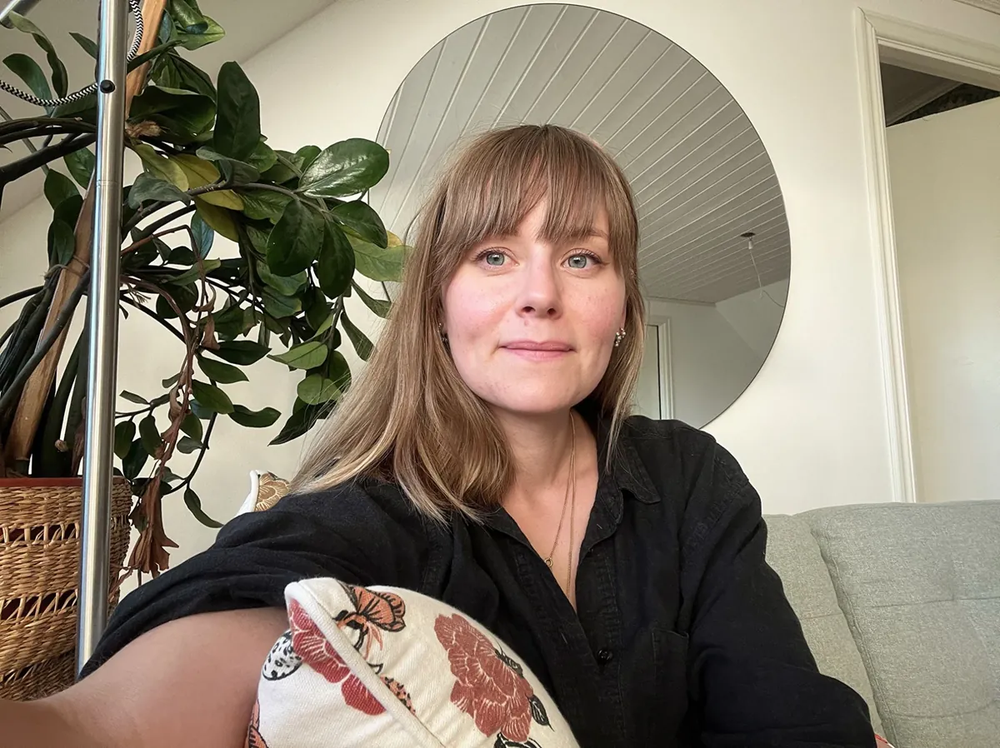
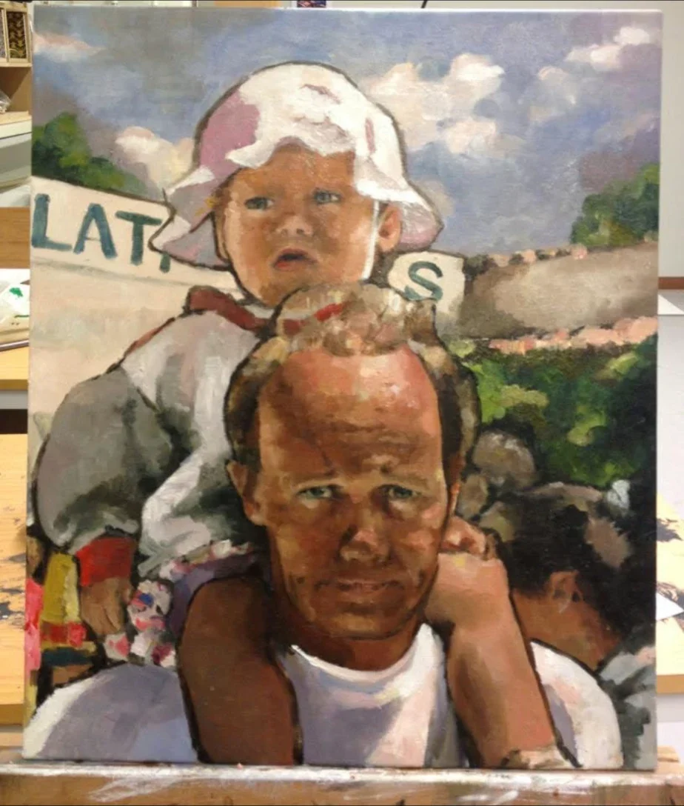
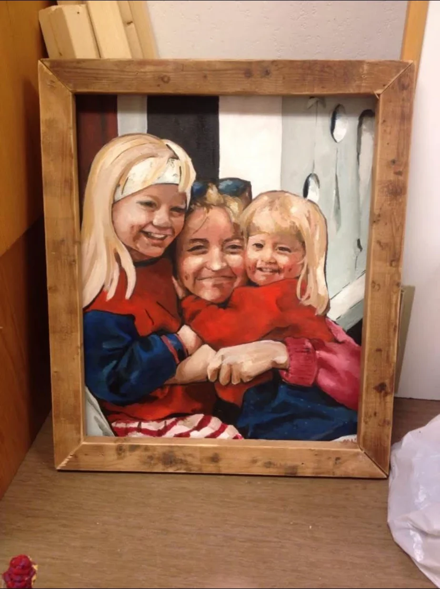
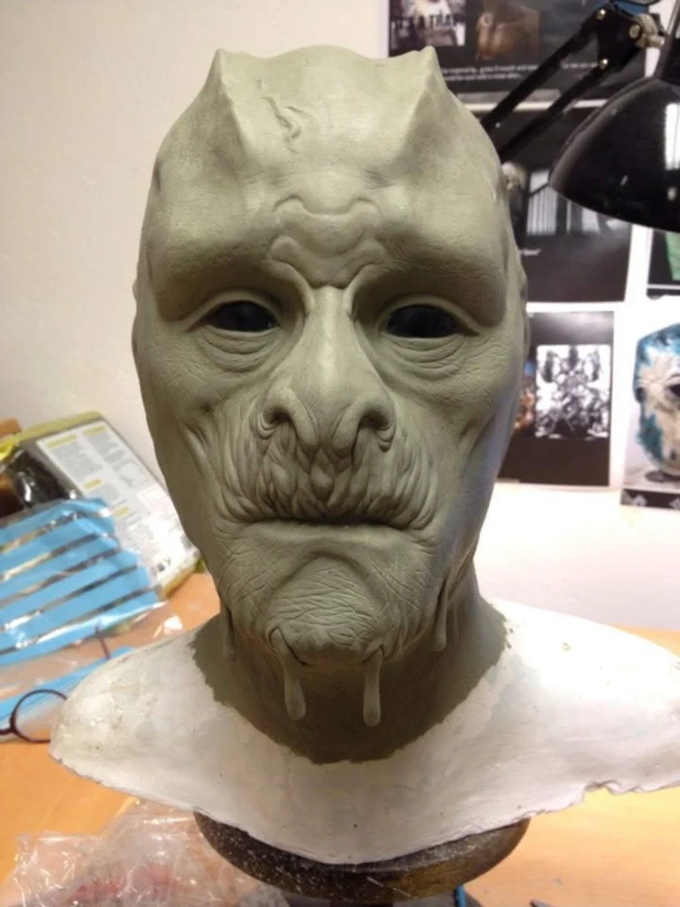
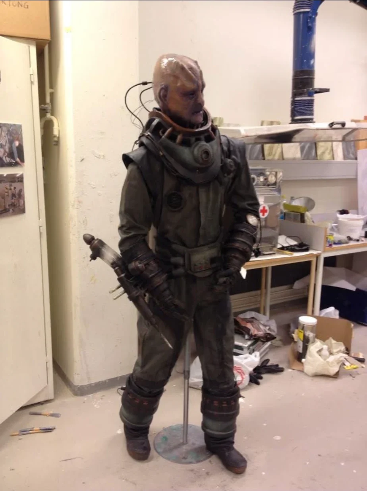
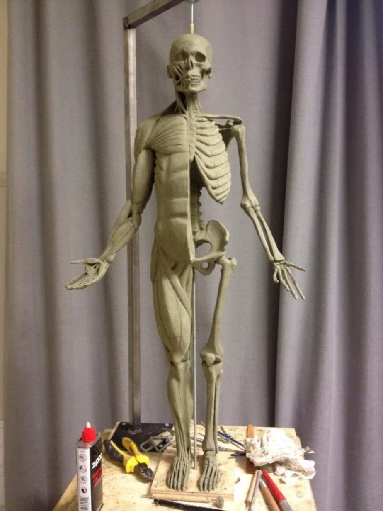
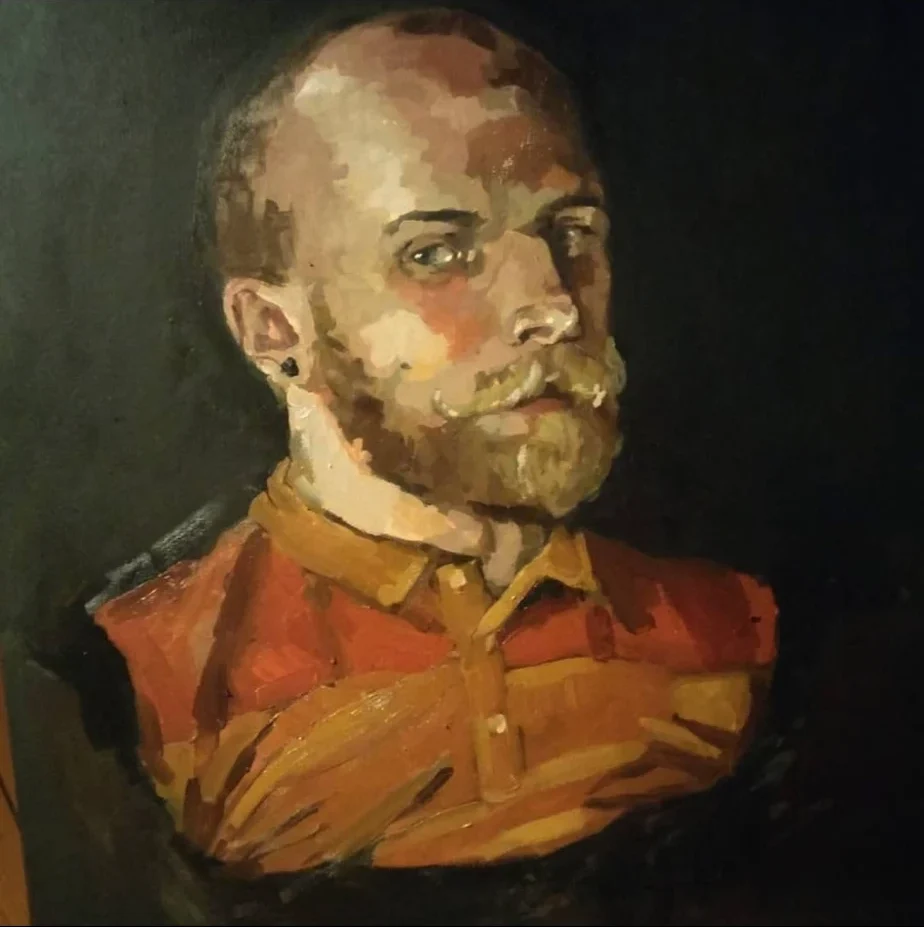
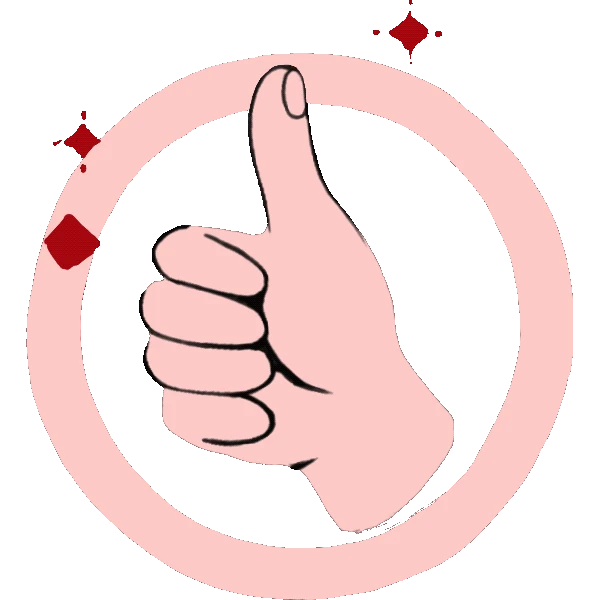

About
Hi, I’m Mikaela
I’m a UX/UI and product designer with a background in traditional art and illustration. I like starting with research and real insights, giving them a clear structure, and finishing with a visual touch that gives the product a personality of its own.

My background
My background is in traditional painting, sculpture and prop making. Over the years it has moved towards design, first through visual merchandising and now into UX/UI. The hands-on feel for form, colour and space comes with me into everything I design.






What I do
I design digital products from the first wireframe to developer handoff: benchmarking, user insights, flows, prototypes and finished UI. Next to that I draw, illustrate and work in 3D, in tools like Blender and Substance Painter. My background as an artist gives every design I work on a more personal touch.
- UX/UI design
- Research & insights
- Benchmarking
- Wireframes
- Prototyping
- Digital design
- Brand design
- Illustration
- Character design
- 3D modelling
- Texturing
- Adobe Creative Suite
- Figma
- Vibe coding
- Blender
- Substance Painter
So far
-
Illustration
A new hand-drawn illustration style for the platform and app.
-
Freelance
Four months as the sole UX/UI designer on an app for keeping track of your horse’s health.
-
Berghs, XYOU
A solo project of 4 weeks over a year on store and customization flows, borrowing UX from fashion and retail.
-
Spring 2026
Six weeks in the New Adventures team, designing a new mortgage application.
-
On my own
A print series where every letter gets its own animal and plant.
